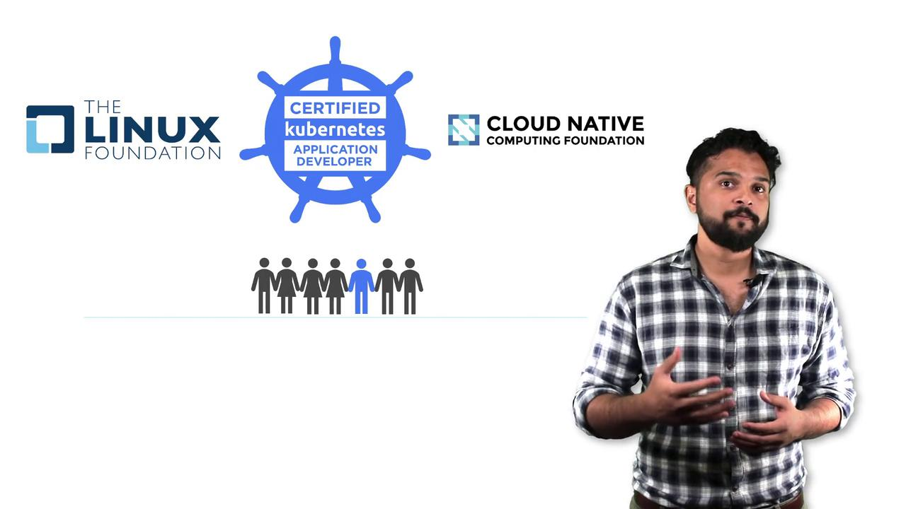
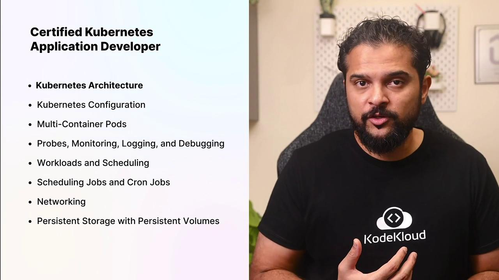
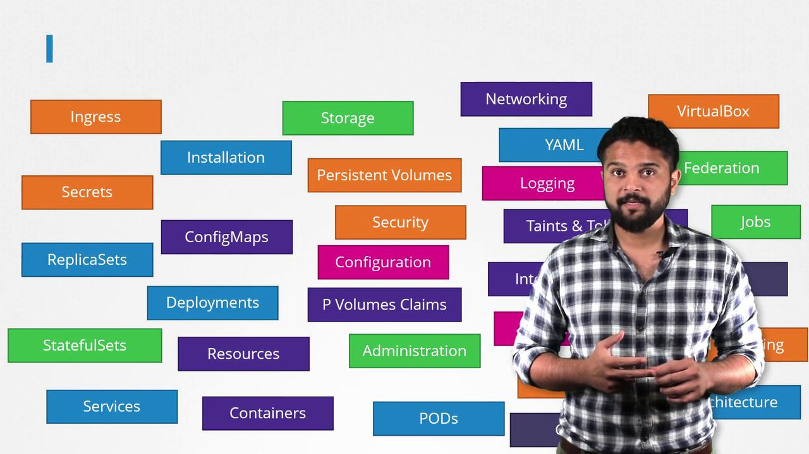
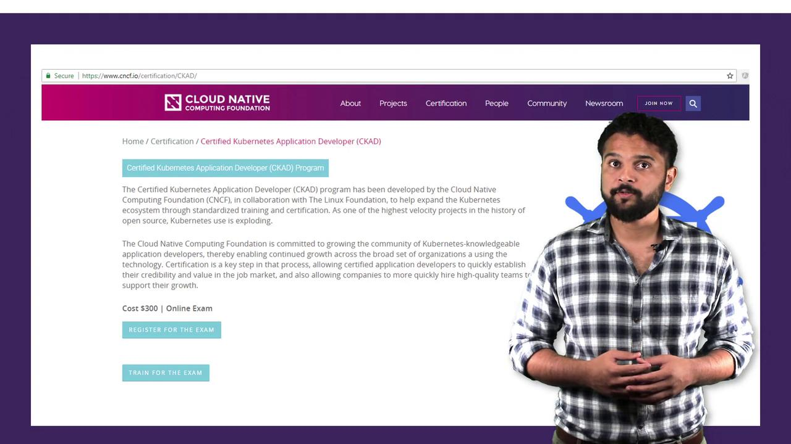
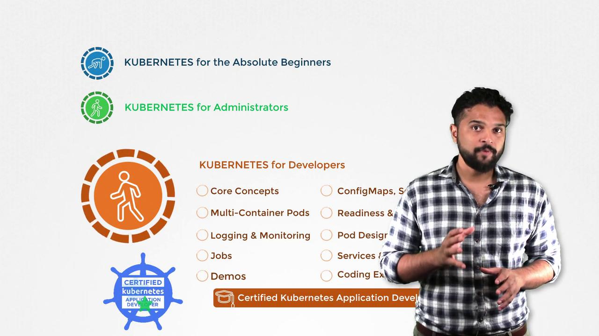
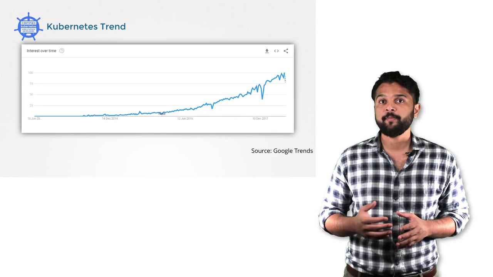

تعالى نعرف إيه هي محطة الفضاء العملاقة اللي اسمها Kubernetes!
الدرس ١
🚀 مهمة الانطلاق: إيه هو الكوبرنيتس؟
تخيل إنك قائد محطة فضاء عملاقة فيها آلاف السفن والكبسولات بتشتغل كلها مع بعض.
محتاج نظام ذكي ينظم كل حاجة ويتأكد إن كل سفينة شغالة صح — ده بالظبط اللي بيعمله Kubernetes! 🌌
🌌 الفكرة ببساطة
الكوبرنيتس (Kubernetes) — أو زي ما بنحب نقول عليه K8s — ده زي مدير محطة الفضاء.
تخيل إن عندك تطبيقات (زي ChatGPT مثلاً!) ومحتاج تشغلهم على كمبيوترات كتير مع بعض.
الكوبرنيتس بيعمل كده:
بيوزع الشغل على كل الكمبيوترات (السفن 🚀)
لو سفينة وقعت، بيشغّل سفينة تانية مكانها تلقائياً
بيتأكد إن كل حاجة شغالة ٢٤ ساعة من غير ما تقف
🛸 تشبيه الفضاء
Kubernetes = محطة الفضاء الدولية (ISS) —
فيها أقسام كتير، كل قسم فيه معدات مختلفة، وفيه نظام مركزي بيراقب كل حاجة ويتحكم فيها.
لو حاجة بوظت، النظام بيصلحها أو بيبدلها من غير ما الطاقم يحس!

محطة الفضاء بتاعتنا — فيها كبسولات (Pods) وأنظمة تحكم
والجميل إن الشركات الكبيرة زي Google و Amazon و Microsoft كلهم بيستخدموا الكوبرنيتس.
يعني لما تتعلمه، بتتعلم نفس الأداة اللي عمالقة التكنولوجيا بيستخدموها! 💪
🎯 إيه اللي هنتعلمه في الكورس ده؟
الكورس ده هيعلمك تبني تطبيقات وتشغلها على الكوبرنيتس.
هنبدأ بالأساسيات وبعدين ندخل على مواضيع متقدمة:
هيكل محطة الفضاء (Kubernetes Architecture)
الكبسولات والسفن (Pods & Nodes)
إعدادات السفينة (Configuration)
الشبكات والاتصالات (Networking)
التخزين الدائم (Persistent Storage)

خريطة المهمات — كل الحاجات اللي هنتعلمها مع بعض
💡 نصيحة من الكابتن
الكورس ده مش بس نظري — فيه معامل عملية (Labs) بتتمرن فيها على كوبرنيتس حقيقي!
ولو غلطت، في مساعد ذكي بيساعدك تلاقي الغلطة وتتعلم منها.
🔧 ركن القيادة — المصطلح التقني
في عالم الكبار بنسمي الموضوع ده Kubernetes (بيتنطق: كوبرنيتيز).
الاسم جاي من كلمة يونانية معناها "قائد السفينة" — يعني إحنا فعلاً بنتعلم قيادة! ⚓
الاختصار بتاعه K8s — الـ8 دي عدد الحروف بين الـK والـs.
الدرس ٢
🛸 خريطة النجوم: سلسلة كورسات الكوبرنيتس
قبل ما نبدأ رحلتنا، لازم نعرف إن في أكتر من مسار ممكن تمشي فيه.
كل مسار بياخدك لمكان مختلف في الفضاء! 🗺️
🌌 الفكرة ببساطة
الكوبرنيتس موضوع كبير — زي ما الفضاء نفسه كبير! عشان كده مش كل الناس محتاجة تتعلم نفس الحاجات.
في ٣ مسارات (كورسات) كل واحد بياخدك في رحلة مختلفة:

كل دي مواضيع الكوبرنيتس — كتير صح؟ بس متقلقش، هناخدهم واحدة واحدة! 😄
🛸 تشبيه الفضاء
فكر فيها كده: في ٣ أنواع من رواد الفضاء:
المبتدئ 🧑🚀 — لسه أول مرة يركب سفينة (Kubernetes for Beginners)
المهندس ⚙️ — بيصلح ويدير المحطة نفسها (CKA - Kubernetes Admin)
إحنا في مسار الـCKAD — يعني بنتعلم نبقى مطورين بيبنوا تطبيقات وبيشغلوها
على
الكوبرنيتس.
مش هنتعلم إزاي نبني المحطة نفسها (ده شغل الـAdmin)، لكن هنتعلم إزاي نبني ونشغل السفن والكبسولات جواها! 🚀

الثلاث مسارات — إحنا في المسار الأخضر (CKAD)!
📚 إيه اللي هنتعلمه في مسارنا (CKAD)؟
إدارة إعدادات التطبيقات (ConfigMaps & Secrets)
الكبسولات متعددة الحاويات (Multi-container Pods)
فحص صحة التطبيق (Readiness & Liveness Probes)
المراقبة والـLogs
الشبكات والـServices

خريطة كاملة لكل الكورسات المتاحة
💡 نصيحة من الكابتن
مش لازم تاخد الكورسات بالترتيب! لو أنت مبتدئ خالص، ابدأ بكورس المبتدئين الأول وبعدين تعالى هنا.
لو عندك خبرة، يلا نكمل مع بعض! 💪
🔧 ركن القيادة — المصطلحات
CKAD = Certified Kubernetes Application Developer CKA = Certified Kubernetes Administrator
الفرق بينهم: الـCKAD بيركز على بناء التطبيقات، والـCKA بيركز على إدارة
المحطة.
الدرس ٣
🏅 شهادة قائد الفضاء: تفاصيل الـCKAD
عشان تبقى قائد فضاء معتمد، لازم تجتاز اختبار عملي — مش مجرد أسئلة!
تعالى نعرف كل التفاصيل عن الامتحان. 🎓
🌌 الفكرة ببساطة
الـCKAD ده شهادة دولية معترف بيها في كل الشركات الكبيرة.
بتثبت إنك تقدر تبني وتشغل تطبيقات على الكوبرنيتس بشكل عملي.
والحلو إن الامتحان نفسه عملي — مش حفظ وصم! 🎯

الطلب على الكوبرنيتس بيزيد كل يوم — شوف الخط بيطلع إزاي! 📈
🛸 تشبيه الفضاء
فكر فيها كده: الشهادة دي زي رخصة قيادة السفينة الفضائية.
من غيرها تقدر تتعلم، بس معاها كل الناس هتعرف إنك قائد محترف!
وزي ما رخصة السواقة بتكون عملي مش نظري بس — الامتحان ده كمان عملي! 🚗➡️🚀
الشهادة من Linux Foundation و CNCF — أكبر المؤسسات في عالم التكنولوجيا
📋 تفاصيل الامتحان
المدة: ساعتين
النوع: عملي — هتكتب أوامر حقيقية على كوبرنيتس!
المكان: أونلاين من بيتك
الرسوم: ٣٠٠ دولار (ومعاها إعادة مجانية لو مرتّش أول مرة)
مسموح فيه: تفتح الـKubernetes Documentation أثناء الامتحان!
الصفحة الرسمية للشهادة — كل التفاصيل موجودة هنا
💡 نصيحة من الكابتن
أهم حاجة في الامتحان إنك تعرف تستخدم kubectl بسرعة وتعرف تلاقي المعلومات في الـDocumentation.
الممارسة العملية هي المفتاح — مش الحفظ! 🔑
الـDocumentation — صديقك الوحيد في الامتحان! اتعلم تستخدمها كويس 📖